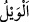
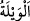
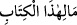
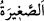

Ki O’nun lütfunun çabukluğunu göresin
Kitabın en ince ayrıntılarına kadar içinde yığılan kat kat günahlara vâkıf olunca, onun
durumuna şaşırıp“Vay hâlimize” derler. Felâketler içinde kendilerini helâk eden
felâketi çağırırlar. Helâk olmak için onu isterler. Karşılaştıkları korkuyu görmezler.
“__WORD__ el-Veyl” ve “__WORD__ el-veyletü” helâk demektir. Yâni ey bizim helâkimiz hazır ol
ve gel. İşte şimdi senin zamanındır.
“Bu nasıl kitapmış!” derler. Bikâî şöyle der: “Âyette “__WORD__ ma-li hazel kitab”
derken, harf-i cer olan “lâm”ın tek başına yazılması, onların dehşetli bir korku ve
şiddetli bir üzüntüye kapıldıkları için bazı kelimeler üzerinde özellikle durduklarına
işarettir. Yâni bu kitabın hâli ne böyle! “Küçük büyük hiçbir şey bırakmaksızın”
yaptığımız hatalarımızın “hepsini sayıp dökmüş!” hepsini içine almış, zapt etmiş
“derler.”
İbn Abbas (r.anhümâ)’dan rivâyete göre “__WORD__ es-Sağîra (küçük) tebessümdür, “__WORD__ el-kebîra (büyük)” ise kahkahadır. Saîd b. Cübeyr (r.a.)’dan rivâyete göre
“küçük” dokunmaktır, “büyük” ise zinâdır.
et-Te’vîlâtü’n-Necmiyye’de şöyle der: “Küçük” duâ bile olsa nefsânî istekle yapılan
bütün tasarruflardır. “Büyük” ise helâlından bile olsa severek dünyalıkta tasarrufta
bulunmaktır. Çünkü dünya sevgisi her hatânın başıdır.”
Bir hadiste şöyle buyrulmuştur: “Küçük görülen günahlardan sakının. Çünkü küçük
günahların hâli şu kavme benzer: Bir vâdiye inerler. Birisi bir odun, ötekisi bir odun
getirir ve ekmeklerini pişirirler.”[187] Başka bir hadiste ise şöyle buyrulmuştur:
“Küçük günahlardan sakının. Çünkü onlar kıyâmet günü, dağlar gibi önüne gelir.
Onların keffâreti sadakadır.”[188]
“Böylece” dünyada “yaptıklarını” kötülükleri ya da amellerinin karşılığını
“karşılarında” kitaplarında tesbit edilmiş olarak hazır “bulmuşlardır.”
et-Te’vîlâtü’n-Necmiyye’de şöyle der: “Çünkü onlar sâlih amellerini, fiillerinin
kalemi ile kalb sahifelerine yazdılar. Kötü amelleri ise nefislerinin sahifelerine
yazdılar. Bu sahifelerde olanların birer aksi de rûhun sahifelerinde nur ya da zulmet
olarak bulunur.”
“Senin Rabb’in hiç kimseye zulmetmez” ki onun yapmadığı bir kötülüğü kitaba
yazsın ya da ameline uygun olan cezayı fazla versin. O ancak ezel kalemi ile yazılanın
doğruluğunu ortaya çıkarır.
et-Te’vîlâtü’n-Necmiyye’de şöyle der: “Eğer bir kimsenin rûhun sahifelerinde nur
galib gelirse o, cennet ehlindendir. Şâyet zulmet gâlib ise o, helâk olanlardandır. Kim
nûruna, günah kirini karıştırmazsa ulvî derecelere ve Hakk’a yakınlık mertebelerine
erenlerdendir. Kime ilâhî cezbe ulaşır, günahlarını hasenâta tebdil eder ve onu
karanlıklardan hakîkî nûra çıkarırsa o, “güçlü padişahın huzûrunda doğruluk
koltuklarındadır.” (el-Kamer, 54/55)”